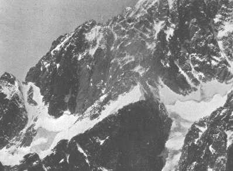

THIS
great climb, up the longest and highest ridge in Western Europe, used
to arouse almost as much international interest among mountaineers as,
more recently, the ascent of Everest. In part this was due to the fact
that every detail upon it could be seen and discussed at leisure by the
congregations in Courmayeur: in part to its unique situation, on the finest
mountain wall, scenically, in the Alps: in part to the height, scale,
and actual difficulty of the glaciers and ridges that defended it; and
in good part, also, to the almost superstitious traditions which had grown
up about its inaccessibility.

The Brouillard Ridge
Mr. Oscar Eckenstein first pointed out the right line of attack. For years after he had himself reached the Col Emile Rey, and was prevented from further high mountaineer- ing, he used to watch from Courmayeur for the season when the 'flaw' should be free of ice. Mr. H. O. Jones, of Clare, Mr. E. T. Compton, Dr. Karl Blodig, and others, all reached the Col, in successive explorations. The Duca degli Abruzzi, after reconnaissances by his Guides, first reached the Pic Luigi Amedeo by descending the ridge from Mont Blanc The redoubtable brothers Gugliermina, after crossing the Col with many nights out, reached. the same peak, after more nights out, directly up the wall from the Mont Blanc glacier In 1911, the 'perfect ' season, Dr. Blodig, Dr. Puhn, Dr. Pfann and Mr. Jones, were all waiting in Courmayeur, separately, to attempt the last link in the ridge climb the ascent from the Col to the Pic. It was achieved by a combination of elements, old and new Mr. Jones, Dr. Blodig, Josef Knubel and myself in the course of a day; and repeated during the next few days by the severa1 parties of Drs. Puhn and Pfann: both these parties spending the night after in the Vallot hut under the summit. Since 1911 the climb has not, to my knowledge been repeated, until the ascent by Van Noorden and Wyn Harris without guides last year, under far less favourable conditions.
I can say
advisedly, therefore, that theirs was a magnificent piece of mountaineering.
There are no outstand- ing technical difficulties except for the one short
passage in the "flaw." But the mere scale of the environment is daunting
to the nerves: the introductory route-finding calls for careful exploration
and sound judgment; and the climbing for unrelaxing vigilance and sureness
for the whole of a long day, over every variety of high-alpine incident
and interruption. I should consider it an ascent ideally contrived to
distinguish between acrobatics and sound and enduring mountaineering qualities.
I need not explain that the letter which follows was written to me in
reply to one of mine, asking the two mountaineers for the details.
HOTEL
DU PIGNE, AROLLA.
28/7/25.
DEAR MR. YOUNG, We were so pleased to receive your letter, for as yet we have had no one to talk to about the Brouillard - at Chamonix we had but a short hour after descent before we had to come on here, whilst to the Arolla type of mind, the Brouillard is less than a mere name.
Your letter encourages us to hope that a few details may not be boring.
The party consisted only of Wyn Harris and myself. We had practically no moon it rose just before dawn, but we were continuously in the shadow of the ridge.. We left the Quintino Sella at midnight exactly, and crossed the glacier by previously cut steps. The ribs of rock following were rather slow work in the dark, but once on the glacier we made fair progress. We had previously worked out a route through the crevasses, which was very fortunate, as they would have been extremely troublesome in the dark otherwise. With claws the couloir itself gave no difficulty, the schrund being easily turned over to the right, and we arrived on the Col Emile Rey at 4.30 to see, on the far side, an amazing sea of cloud, tinged scarlet by the rising sun, which just swamped the Dames Anglaises, the Aiguille Noire looking a magnificent spire thrusting up through the cloud.
After a second breakfast we left (4.45) with some misgivings about the weather, and traversed (after weeks of anticipation) to the foot of the gully. It was choked with great icy columns and pillars and, to our judgment, was quite impossible after one pitch. Harris tried a route on the left wall, but we were brought up after about zoo feet by an incoherent snow cornice. I then started up an icy pitch on the right wall, Harris led through me and up a difficult iced chimney to an icy platform with a big iced bollard for belay. I then tried a traverse to the right but was brought up after 10 feet by vertical rotten ice.
The last alternative was the wall straight above. I believe this was strictly vertical with the exception of a gang- way sloping up to the right and outwards, about two feet wide, which finished about eight feet from the top of the wall. Only the first step of this was icy. Harris led up the gangway, but could not manage the wall above in his rucksack, for the finger strain seemed considerable. So he returned and I had a shot without rucksack and taking a shoulder for the first step to save time and strain. I found I could hold myself in at the top of the gangway by finger holds, and put one hand over the top of the wall, but there were no definite holds.
After a rest I had a second shot and quite suddenly found the solution in a long stride to the left to a fair foothold and then up easy rocks to finish the fifty-foot pitch.
I hauled up the baggage and Harris followed very speedily. It was here that a solitary stone fell with a smack a yard from us. This was all we saw fall during the day, but it made us hurry all together up the remainder of the wall of the gully, Harris cutting up an ice cascade in a chimney on the way - rather difficult - until, bearing left, we passed a small neve patch on the right. Here we unroped and wandered delightfully straight up to the Amedeo, keeping on the rocks just to the left of a long neve slope. We reached the Amedeo at 9.45 and had half an hour's halt.
At 10.15 we left on a short rope (I led) and were going well when we were enveloped in a very appropriate mist; but when we got higher - on to the less steep and snowy ridge before Mont Blanc de Courmayeur, the weather became worse and we were rather worried, not knowing the geography and thinking we should be already past Mont Blanc de Courmayeur when we were obviously not so. However, we put on claws again, Harris took the lead and we trudged on by compass until at 4.0 we decided that a number of bottles and sardine tins represented the summit [of Mont Blanc]. It took us 1 1/4 hours from the summit to the Vallot hut for we had to take great care over the compass - except in occasional 'thinnings' we could not see twenty yards beyond our noses - and snow and wind made map and compass work quite trying. We reached the hut at 5.3o and decided to stop the night. Actually, we could have got to the Grands Mulets in .html two hours, for just below the hut the usual groove-like track started down the soft snow. It was a glorious day's work; it was a pity we had to take heavy sacks it spoiled our times rather but we had no more time left to return to Courmayeur and had to take everything with us.
The weather was horrible all the time - never more than three days fine consecutively. Consequently, in our three weeks at Chamonix we got very little done. Col des Cristaux, Col du Geant, Aiguille du Geant, Aig. Noire de Peuteret and attempts on the Tour Noir and the Moine ridge of the Verte. The latter was grand, but we were turned by time only 400 feet from the summit and got off the glacier at 9.0 P.M.
Arolla has been a pleasant interlude, but to-morrow we leave for the Bricolla to traverse Dent Blanche - we have had two days fine up to to-day and with to-morrow the West ridge might be in condition.
Please excuse this very full and lengthy description when one starts to describe such a climb shortly it runs into an amazing length!